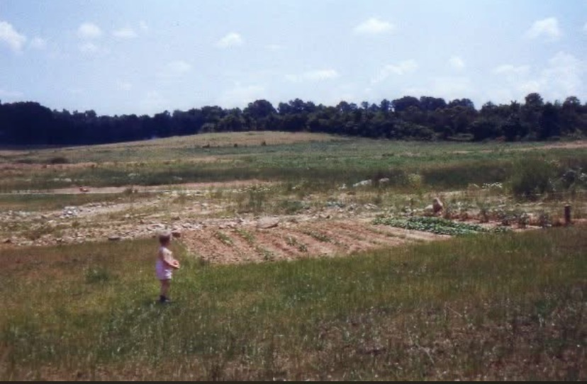
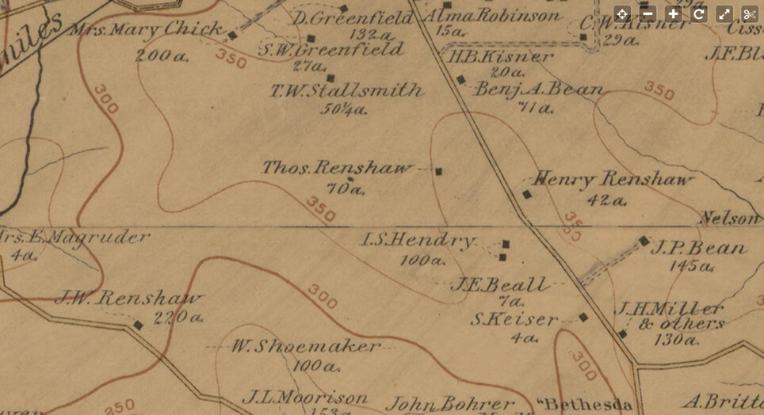
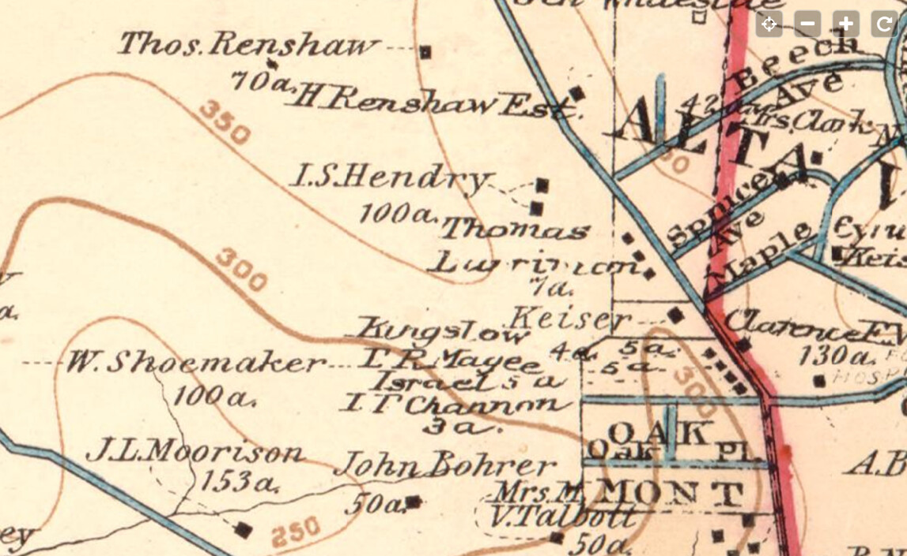
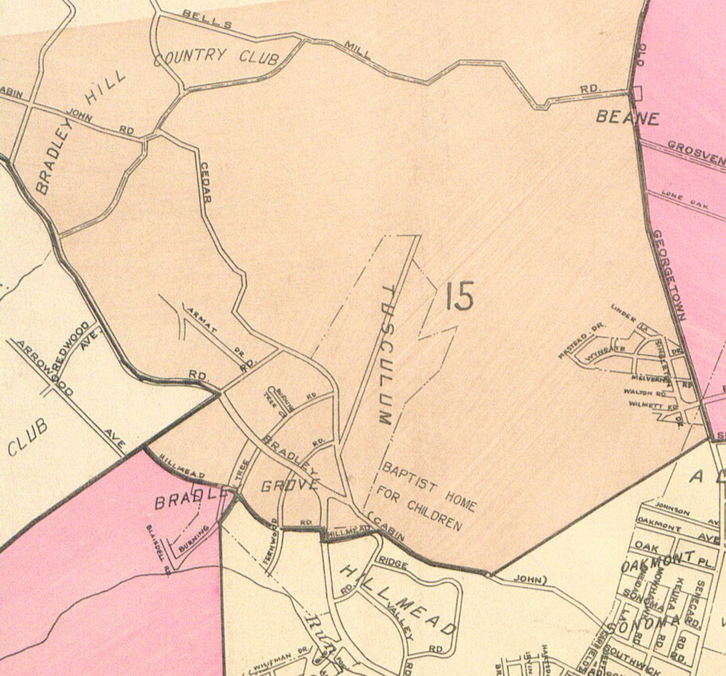
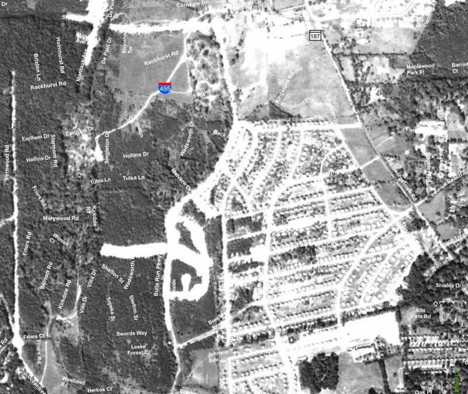
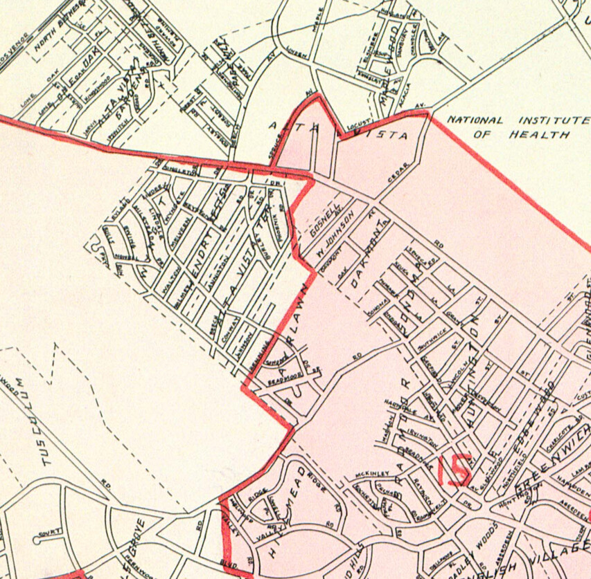
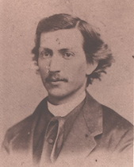
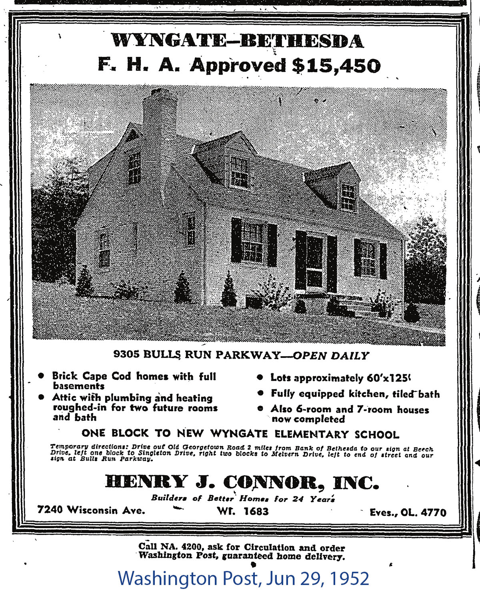
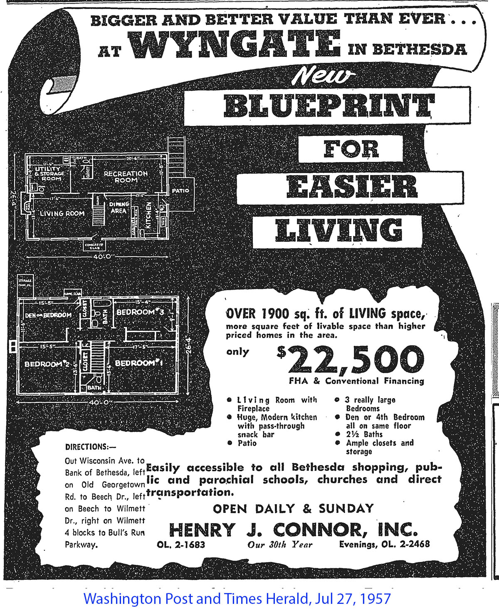

Wyngate Citizens Association
Who We Are
The Wyngate Citizens Association (WCA) is a nonprofit group representing the approximately 1,600 households that live between Fernwood Road, Greentree Road, the Capital Beltway, and Old Georgetown Road in Bethesda, Maryland.
The WCA works to connect neighbors, support community projects, and give residents a voice on issues affecting their quality of life. The WCA listserv — with over 1,400 members — is one of the most active neighborhood forums in the area.
Wyngate also participates in Maplewood & Wyngate Neighbors Helping Neighbors, a joint program connecting neighbors with simple services like rides, errands, and other neighborly help.
Origins
The land that became Wyngate was farmland well into the twentieth century. In 1949, looking east from a backyard on Ewing Drive, you would have seen open fields stretching toward Old Georgetown Road — not a house in sight.

View from a backyard on Ewing Drive, looking east toward Old Georgetown Road, 1949.
Courtesy of Susannah Files.
The aerial photographs below show the transformation of the neighborhood decade by decade — from open land in 1949 to a fully developed community by 1979.
Aerial images © HistoricAerials.com — placeholder images, licensed versions pending. Submitted by George Smith.
Mapping the Area
Historical maps and atlases trace the slow transformation of this area from farmland to neighborhood over more than half a century.

1894
Hopkins, Vicinity of Washington. I.S. Hendry held 100 acres and Thomas Renshaw 70 acres in this area. View full map

1904
Baist's Map of the Vicinity of Washington, D.C. The Hendry and Renshaw holdings remain, with the Alta Vista subdivision developing nearby. View full map
1916
Real Estate Atlas. Area 33 is the present-day site of the YMCA; note the trolley tracks running along what is now Old Georgetown Road. View full map

1941
Atlas of Montgomery County, compiled by Klinge. "Wyngate" appears by name for the first time, alongside Walton, Wilmett, and Melvern roads — though the land is still largely undeveloped. View full map

1951
Aerial view showing new housing built out between Ewing Drive and Singleton Drive. View interactive map

1953
Atlas of Montgomery County, compiled by Klinge. The Hendry Estates streets are now fully laid out, with housing filling in between Old Georgetown Road and Ewing Drive. View full map
Maps researched and shared by George Smith.
Early History
Among the earliest landowners in the area were Isaac Singleton Hendry and his wife Annie Walton Hendry, who owned a farm on what is now Singleton Drive. Their names live on in the neighborhood today: Singleton Drive is named for Isaac, and Walton Road — running between Melvern Drive and Wilmett Road — is named for Annie.

Isaac Singleton Hendry.
Source: Montgomery History (catalog #086-HENDRY-001). Shared by George Smith.
Annie Walton Hendry.
Source: Montgomery History (catalog #086-HENDRY-002). Shared by George Smith.
The original subdivision that became part of Wyngate was known as Hendry Estates. According to neighborhood family history, the first eight homes in the development were built by the father of longtime resident Leland Henry.
Family history details shared by Diane Boyle.
1950s Development
Much of Wyngate was built in the early 1950s by Henry J. Connor, Inc., a Bethesda builder in operation for over two decades. The ads below, from the Washington Post, give a vivid picture of what the neighborhood looked like — and what it cost — when it was new.

Washington Post, June 29, 1952. Brick Cape Cod homes starting at $15,450. "One block to new Wyngate Elementary School."

Washington Post, July 27, 1957. Over 1,900 sq ft for $22,500.
Newspaper ads shared by Iosif Vaisman.
Some of Wyngate's earliest homes predate the postwar building boom. Two houses on Kentstone Drive date to 1939 and are still standing today. According to family history, 9516 Kentstone Drive was one of fifteen "Houses of Tomorrow" displayed at the 1939 World's Fair — demonstration homes built to showcase modern construction and design. The house has since been demolished, but its twin at 9518 Kentstone remains.
The original owner of 9518 Kentstone was William Camp, who served as Comptroller of the Currency for the U.S. Treasury Department — notably, the only Comptroller to serve under both a Democratic and a Republican president.
Kentstone history shared by Cathy Adams, former resident. World's Fair connection based on family recollection.
A Fuller History
Like most suburban subdivisions built around Washington, D.C. in the first half of the twentieth century, properties in this part of Bethesda were originally sold subject to deeds of covenant that — alongside ordinary restrictions on lot size, setbacks, and building type — explicitly barred Black families from buying, renting, or occupying homes. These racial restrictive covenants were a standard tool used by developers and builders throughout the area during this period.
The document below is a 1949 deed of covenants recorded for a Bethesda subdivision near Wyngate. Clause (f) states plainly that no Black person may buy, rent, lease, use, or occupy any building or lot, except as a domestic servant residing on the property.
Deed of Covenants, Liber 1251, Folio 490, recorded May 6, 1949. Clause (f) imposes a racial restriction on occupancy.
Covenants like this one were used throughout the Bethesda-Chevy Chase area and the wider Washington suburbs, and were one of several tools — alongside discriminatory lending and real estate steering — that limited homeownership opportunities for Black families in neighborhoods like ours. Montgomery County's Mapping Segregation project documents this history across the Downcounty Planning Area, which includes Wyngate.
Document shared by George Smith.
Notable Residents
Wyngate has been home to some notable figures over the years.
Television producer and creator of Beverly Hills, 90210, Melrose Place, Sex and the City, and Emily in Paris. Star grew up in Wyngate and attended Wyngate Elementary School before his family moved to Potomac. His landmark show 90210 was originally conceived as being set in Potomac, Maryland. Read more: MoCo Show, December 2025.
Shared by Rob Kimmer.
Rock guitarist and longtime member of Bruce Springsteen's E Street Band, inducted into the Rock and Roll Hall of Fame in 2014. Lofgren grew up in Bethesda and attended Walter Johnson High School. He is believed to have lived on Wilmett Court.
Shared by Arlene Ferretti.
Further Reading
In 1976, students and parents at North Bethesda Junior High School produced a remarkable local history pamphlet as part of a Bicentennial project. Titled The Tiger's Territory, it documents the history of landmarks throughout the North Bethesda area — including many sites that shaped what became Wyngate.
A neighborhood history by students of North Bethesda Junior High School. Published by the Parent Teacher Student Association.
Copy provided by George Smith. Digitized by a friend of George Smith.